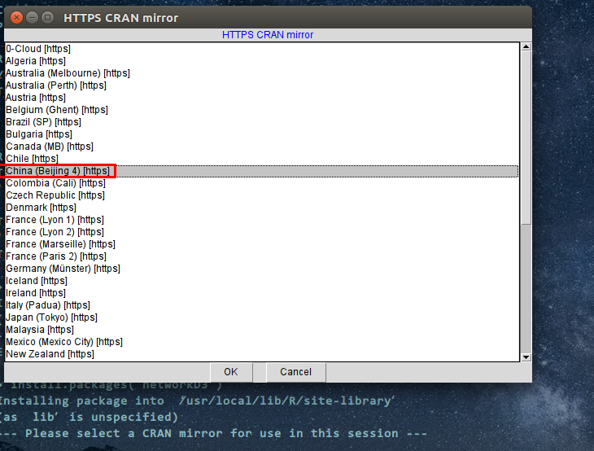
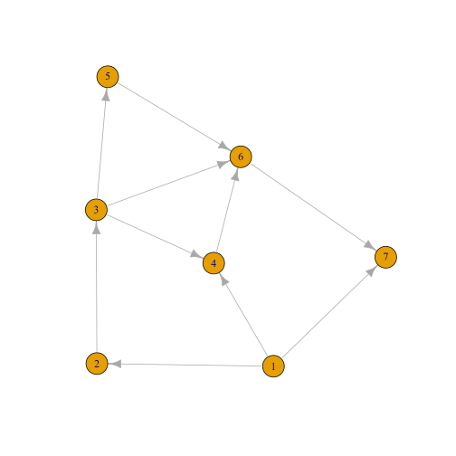

环境:Ubuntu x64 14.04
本文所涉及的文件(如果有的话)大部分可以通过文章末尾的链接下载.
由于在实现图的相关算法时,图的可视化有助于理解图对应的数据结构.
这个事情其促使我接触了R语言.R语言简直是数据可视化的神器,数据分析里的瑞士尖刀.
R语言环境的安装
到这里CRAN-mirrors中的China栏目找到你喜欢的源:
比如http://mirrors.tuna.tsinghua.edu.cn/CRAN/,然后添加到/etc/apt/sources.list并执行源更新:
echo 'deb http://mirrors.tuna.tsinghua.edu.cn/CRAN/bin/linux/ubuntu trusty/' >>/etc/apt/sources.list
apt-get update
你看你会遇到如下错误:
W: GPG error: http://mirrors.tuna.tsinghua.edu.cn trusty/ Release: The following signatures couldn't be verified because the public key is not available: NO_PUBKEY 51716619E084DAB9
原因是因为没有添加对应的GPG key,解决方法很简单,从一个公共服务器添加一下即可:
apt-key adv --keyserver keyserver.ubuntu.com --recv-keys 51716619E084DAB9
注意最后的那串数字上述报错后的PUBLIC KEY.添加KEY后,再执行apt-get update即可.
接下来安装R语言:
apt-get install r-base
安装完成后,在控制台输入Ｒ即可进入R语言环境.下面是一些常用的操作:
.libPaths():查看库路径
library():查看安装的所有包
install.packages("mypackage"):安装包
remove.packages("mypackage"):卸载包
library("mypackage"):载入一个已经安装的包
update.packages():更新包
q():退出R语言环境
R语言的数据可视化能力很强悍,强悍的原因是因为一些强悍的可视化工具包以及相应的辅助包,
所以安装完R语言后,我们需要先将一些包安装好,比如下面这些包:
install.packages('igraph')
install.packages('network')
install.packages('sna')
install.packages('ndtv')
install.packages('visNetwork')
install.packages('statnet')
install.packages("extrafont") #font_import()
install.packages('stringr')#
有的包比较大,编译的时间比较长,所以安装的时间也比较长,在安装包的时候会提示选择从哪个地方下载:

选择China即可.
我看有人在Github上整理了一个R语言包的收集,感兴趣的可以戳这里.
R语言也是导入库的方法为library(lib-nname),比如library(stringr).
R语言的一个类似于IDE环境的是RStudio,个人桌面版本是免费的,用了一下感觉还不错(不过我更喜欢纯粹的SHELL环境).
下载地址在这里,
在Ubuntu中安装的话,如果缺少依赖项使用apt-get -f install解决.
R语言基本语法
数据类型
向量(vector),矩阵(matrix),数组(array),数据框(data frame),因子(factor),列表(list)
算术运算
加法,减法,乘法,除法,乘幂 ==> +,-,*,/,^
大于,小于,大于等于,小于等于,等于,不等于 ==> >、<、>=、>=、==、!=
模运算 ==> x %% y
整数除法 ==> x %/% y
标量的逻辑与和逻辑或 ==> &&,||
向量的逻辑与和逻辑或 ==> &,|
! ==> 逻辑非
逻辑真假 ==> TRUE,FALSE
赋值语句 ==> x <- val,将val复制给x,注意为了避免错误,应该在赋值号<-两端加上空格.
需要注意的是,在函数传递时则只能使用等于(=)赋值号.
控制流
if/else语句:要求else必须和if的右括号处于同一行.比如,
if(exp1) {
this codes...
} else { #else应该与{处于同一行
that codes...
}
多分支结构:
if( exp1 ){
this coeds...
}else if( exp2 ){
that codes...
}else{
no codes...
}
三元操作符结构:x >- if( expr ) 1 else 2,另一种方式:ifelse(expr,expr-true-val,expr-false-val)
for/while/repeat:似乎没什么可说的
repeat:无条件循环,必须在程序内部设法退出
repeat:
{
iTotal <- iTotal + i
i <- i+1
if(i <= 100) next else break # 注意:next，break的用法
}
switch语句:
n <- 2
switch(n,
print("德玛西亚"),
print("探险家"),
print("多兰之剑"),
print("狂徒铠甲"),
print("提莫")
)
#将会输出探险家
调试语句
print(expr)
R计算的特点
1)向量化(逐个元素循环操作)
例:y=1:10; y+1; sqrt(y);
2)两个不等长的变量循环填充
例:x=1:3; y=1:10; z=x+y
运行R脚本
最佳的运行方法是使用Rscript:
Rscript rscript.r arg1 arg2 ...
R脚本图形可视化实践
下面的代码是我在实现图算法过程中将图可视化的代码:
#=====================================================
#filename:plotcsv.r
#Useage:Rscript plotcsv.r fname.csv isdirected isweighted
#-----------------------------------------------------
#参数:默认生成无向无权图:
# 第一个参数fname.csv:存储邻接矩阵的csv文件
# 第二个参数isdirected:为0时无向图,为1时有向图(可选)
# 第三个参数isweighted:为0时无权图,为1时有权图(可选,
# 但有第三个参数时,第二个参数必须有)
#输出:高清无损svg矢量图片
#-----------------------------------------------------
#2016-09-06 Tue 02:49 PM
#bugnofree
#dXAyZ2Vla0AxNjMuY29tCg==
#=====================================================
library(igraph)
library(stringr)
#读取输入参数,第一个参数为args[1],第二个为args[2],依次类推
args<-commandArgs(T)
#读取csv文件(没有头)
mygraph=read.csv(args[1], header=FALSE)
#csv转换为邻接矩阵
M <- as.matrix(mygraph)
#默认是无向图
gmode <- "undirected"
if(length(args) >= 2) {
if(as.numeric(str_trim(args[2],side='both')) == 0) gmode <- "undirected"
if(as.numeric(str_trim(args[2],side='both')) == 1) gmode <- "directed"
}
#默认不带权图
gweight <- FALSE
if(length(args) == 3) {
if(as.numeric(str_trim(args[3],side='both')) == 0) gweight <- FALSE
if(as.numeric(str_trim(args[3],side='both')) == 1) gweight <- TRUE
}
#print(M>1)
if(gweight == TRUE) {
g <- graph.adjacency(adjmatrix=M, mode = gmode, weighted=TRUE, diag=FALSE)
} else {
#无权重绘画图时,R会将矩阵中的数值作为两点间的线条数目
#为了消除这个影响,无权重时对所有权重大于1的置为1
M[M > 1] <- 1
g <- graph.adjacency(adjmatrix=M, mode = gmode,diag=FALSE)
}
#nrow(mygraph):返回矩阵的行数目,等价于点的数目
#然后使用串联函数c()来生成点标签,主要是为了自
#定义点索引(因为默认是从1开始,且是V1,V2..)
V(g)$name <- c(1:nrow(mygraph))
#输出文件名称,保存为svg文件
output <- str_c(str_trim(args[1],side='both'),".svg")
#设置为svg输出
svg(output)
#画图
if(gweight == FALSE) {
plot(g)
} else { #注意R语法中要求else必须和右括号在一行上
plot(g,edge.label=(E(g)$weight))
}
#print(gmode)
#print(gweight)
dev.off()
图的算法是用C++实现的,为了方便生成图,可以在C++类里面写一个工具函数,
该工具函数将图以邻接矩阵输出,并保存为csv文件,然后使用R语言读取该CSV文件,
进而生成图片,上述R脚本就是用于读取csv文件并生成对应图片的代码.
如果该工具函数在控制台输出R脚本的调用命令(如:Rscript plotcsv.r 1.csv 1 0),
那么此过程可以借助makefile,使用`make`(注意为反引号)可以实现一个命令完成C++程序的编译并生成对应的图片.
上述R代码里面给出了丰富的注释,代码我不会做过多解释.假设csv文件中给出的邻接矩阵如下:
0,1,0,1,0,0,1
0,0,1,0,0,0,0
0,0,0,1,1,1,0
0,0,0,0,0,1,0
0,0,0,0,0,1,0
0,0,0,0,0,0,1
0,0,0,0,0,0,0
那么可以使用R的read.csv来读取该文件,然后调用as.matrix生成一个矩阵数据,再使用graph.adjacency生成邻接矩阵.
最后通过plot来绘制图形,如下:

可以生成不同的图片格式,上述代码生成的是svg,这种图片是矢量图片,可以无损的显示,我比较倾向于这种图片,
保存为其他图片的方式如下:
jpeg("xxx.jpeg", width = 4, height = 4, units = 'in', res = 300)
plot(x, y)
dev.off()
png("xxx.png", width = 4, height = 4, units = 'in', res = 300)
plot(x, y) # Make plot
dev.off()
pdf("xxx.pdf", width = 4, height = 4)
plot(x, y) # Make plot
dev.off()
上面的plot函数参数很多,设置点和边的属性包括如下一些(但不限于此):
vertex.size = 25
vertex.color="red"
vertex.frame.color= "white"
vertex.label.color = "white"
vertex.label.family = "sans"
edge.width=2
edge.color="black"
使用邻接列表也可以绘制:
默认是无向图:
g <- graph( c(1,2,1,3,1,4,3,4,3,5,5,6,6,7,7,8,8,9,3,8,5,8))
但是也可以设置有向图:
g <- graph( c(1,2,1,3,1,4,3,4,3,5,5,6,6,7,7,8,8,9,3,8,5,8), directed = FALSE)
设置权重:
E(g)$weight=c(1:length(E(g)))
plot(g,edge.label=E(g)$weight)
实际上你用下面这样的语句也可以:
#E(g)$w=c(1:length(E(g)))
#plot(g,edge.label=E(g)$w)